assignment_based_selection_overlap_setting
Annie Xie
2025-10-07
Last updated: 2025-10-07
Checks: 7 0
Knit directory: stability_selection/
This reproducible R Markdown analysis was created with workflowr (version 1.7.2). The Checks tab describes the reproducibility checks that were applied when the results were created. The Past versions tab lists the development history.
Great! Since the R Markdown file has been committed to the Git repository, you know the exact version of the code that produced these results.
Great job! The global environment was empty. Objects defined in the global environment can affect the analysis in your R Markdown file in unknown ways. For reproduciblity it’s best to always run the code in an empty environment.
The command set.seed(20250906) was run prior to running
the code in the R Markdown file. Setting a seed ensures that any results
that rely on randomness, e.g. subsampling or permutations, are
reproducible.
Great job! Recording the operating system, R version, and package versions is critical for reproducibility.
Nice! There were no cached chunks for this analysis, so you can be confident that you successfully produced the results during this run.
Great job! Using relative paths to the files within your workflowr project makes it easier to run your code on other machines.
Great! You are using Git for version control. Tracking code development and connecting the code version to the results is critical for reproducibility.
The results in this page were generated with repository version fc6749b. See the Past versions tab to see a history of the changes made to the R Markdown and HTML files.
Note that you need to be careful to ensure that all relevant files for
the analysis have been committed to Git prior to generating the results
(you can use wflow_publish or
wflow_git_commit). workflowr only checks the R Markdown
file, but you know if there are other scripts or data files that it
depends on. Below is the status of the Git repository when the results
were generated:
Ignored files:
Ignored: .DS_Store
Ignored: .Rhistory
Ignored: .Rproj.user/
Untracked files:
Untracked: analysis/consensus_matrix_based_stability_selection.Rmd
Untracked: analysis/consensus_nmf_based_stability_selection.Rmd
Untracked: analysis/consensus_nmf_selection_overlap_setting.Rmd
Note that any generated files, e.g. HTML, png, CSS, etc., are not included in this status report because it is ok for generated content to have uncommitted changes.
These are the previous versions of the repository in which changes were
made to the R Markdown
(analysis/assignment_based_selection_overlap_setting.Rmd)
and HTML
(docs/assignment_based_selection_overlap_setting.html)
files. If you’ve configured a remote Git repository (see
?wflow_git_remote), click on the hyperlinks in the table
below to view the files as they were in that past version.
| File | Version | Author | Date | Message |
|---|---|---|---|---|
| Rmd | fc6749b | Annie Xie | 2025-10-07 | Add analysis of hungarian-algo based method in overlapping setting |
Introduction
In this analysis, I test an assignment-based stability selection method in the sparse overlapping setting.
library(dplyr)
library(ggplot2)
library(pheatmap)
library(flashier)source('code/visualization_functions.R')compute_cosine_sim_matrix <- function(L1, L2){
norms1 <- apply(L1, 2, function(x){sqrt(sum(x^2))})
norms1[norms1 == 0] <- Inf
norms2 <- apply(L2, 2, function(x){sqrt(sum(x^2))})
norms2[norms2 == 0] <- Inf
L1_normalized <- t(t(L1)/norms1)
L2_normalized <- t(t(L2)/norms2)
#compute matrix of cosine similarities
cosine_sim_matrix <- crossprod(L1_normalized, L2_normalized)
return(cosine_sim_matrix)
}Stability Selection Code
stability_selection_split_data <- function(X, dim = c('rows', 'columns')){
if (dim == 'rows'){
n <- nrow(X)
n1 <- ceiling(n/2)
# n2 <- floor(nrow(X)/2)
} else if (dim == 'columns'){
n <- ncol(X)
n1 <- ceiling(n/2)
# n2 <- floor(ncol(X)/2)
} else {
stop('Wrong input for dim')
}
subset1 <- sample(n, size = n1, replace = FALSE)
if (dim == 'columns'){
X1 <- X[,subset1]
X2 <- X[,-(subset1)]
} else { # dim = 'rows'
X1 <- X[subset1,]
X2 <- X[-(subset1),]
}
return(list(X1, X2, subset1, setdiff(c(1:n), subset1)))
}filter_out_duplicates <- function(L){
cosine_sim_mat <- compute_cosine_sim_matrix(L,L)
cosine_sim_mat[lower.tri(cosine_sim_mat, diag = TRUE)] <- 0
duplicates <- which(cosine_sim_mat > 0.99 ,arr.ind = TRUE)
removed.idx <- c()
for (i in 1:nrow(duplicates)){
idx.to_remove <- duplicates[i,2]
if (!(idx.to_remove %in% removed.idx)){
L <- L[,-idx.to_remove, drop = FALSE]
removed.idx <- c(removed.idx, idx.to_remove)
}
}
}stability_selection_post_processing <- function(L1, L2, threshold=0.99){
# compute similarity
cosine_sim_matrix <- compute_cosine_sim_matrix(L1, L2)
# find pairings
# assignment_problem <- lpSolve::lp.assign(cosine_sim_matrix, direction = "max")
# pairings <- which(assignment_problem$solution == 1, arr.ind = TRUE)
assignment_problem <- RcppHungarian::HungarianSolver(-1*cosine_sim_matrix)
pairings <- assignment_problem$pairs
# remove things that were not paired
no_pair <- pairings[,2] == 0
pairings <- pairings[!(no_pair), , drop = FALSE]
# filter pairings
pairing_similarities <- cosine_sim_matrix[pairings]
pairings.keep <- pairing_similarities > threshold
pairings <- pairings[pairings.keep, , drop = FALSE]
K <- nrow(pairings)
# compute final estimate
if (K > 0){
L_final <- matrix(0, nrow = nrow(L1), ncol = K)
for(i in 1:K){
L_final[,i] <- rowMeans(cbind(L1[, pairings[i,1]], L2[, pairings[i,2]]))
}
} else {
L_final <- matrix(0, nrow = nrow(L1), ncol = 1)
}
return(L_final)
}Sparse Overlapping Data Generation
sim_binary_loadings_data <- function(args) {
set.seed(args$seed)
FF <- matrix(rnorm(args$k * args$p, sd = args$group_sd), ncol = args$k)
if (args$constrain_F) {
FF_svd <- svd(FF)
FF <- FF_svd$u
FF <- t(t(FF) * rep(args$group_sd, args$k) * sqrt(p))
}
LL <- matrix(rbinom(args$n*args$k, 1, args$pi1), nrow = args$n, ncol = args$k)
E <- matrix(rnorm(args$n * args$p, sd = args$indiv_sd), nrow = args$n)
Y <- LL %*% t(FF) + E
YYt <- (1/args$p)*tcrossprod(Y)
return(list(Y = Y, YYt = YYt, LL = LL, FF = FF, K = ncol(LL)))
}n <- 100
p <- 1000
k <- 10
pi1 <- 0.1
indiv_sd <- 1
group_sd <- 1
seed <- 1
sim_args = list(n = n, p = p, k = k, pi1 = pi1, indiv_sd = indiv_sd, group_sd = group_sd, seed = seed, constrain_F = FALSE)
sim_data <- sim_binary_loadings_data(sim_args)This is a heatmap of the true loadings matrix:
plot_heatmap(sim_data$LL)
EBCD
Split by Column
set.seed(1)
X_split_by_col <- stability_selection_split_data(sim_data$Y, dim = 'columns')set.seed(1)
ebcd_fits_by_col <- list()
for (i in 1:(length(X_split_by_col)/2)){
ebcd_fits_by_col[[i]] <- ebcd::ebcd(t(X_split_by_col[[i]]),
Kmax = 20,
ebnm_fn = ebnm::ebnm_generalized_binary)$EL
}This is heatmap of the loadings estimate from the first subset:
plot_heatmap(ebcd_fits_by_col[[1]], colors_range = c('blue','gray96','red'), brks = seq(-max(abs(ebcd_fits_by_col[[1]])), max(abs(ebcd_fits_by_col[[1]])), length.out = 50))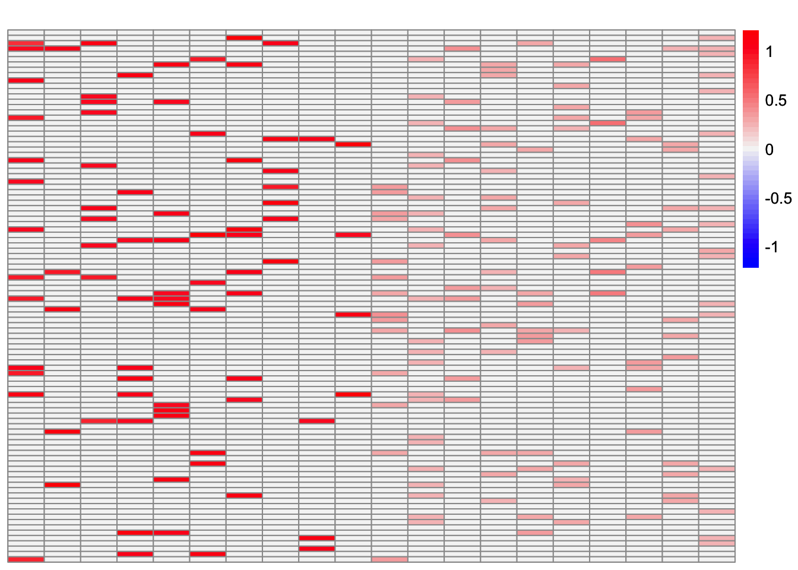
This is the max correlation for each true factor:
apply(cor(ebcd_fits_by_col[[1]], sim_data$LL), 2, max) [1] 0.9975203 0.9974854 0.9983737 0.9988182 0.9992998 0.9991493 0.9990425
[8] 0.9982839 0.9981471 0.9978499All of the factors are accurately recovered.
This is a heatmap of the loadings estimate from the second subset:
plot_heatmap(ebcd_fits_by_col[[2]], colors_range = c('blue','gray96','red'), brks = seq(-max(abs(ebcd_fits_by_col[[2]])), max(abs(ebcd_fits_by_col[[2]])), length.out = 50))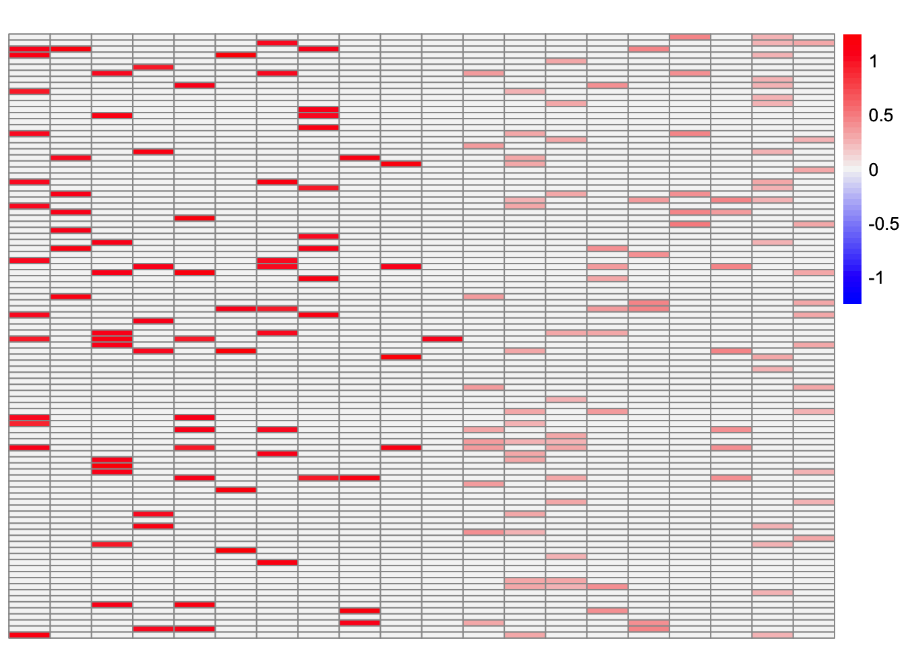
This is the max correlation for each true factor:
apply(cor(ebcd_fits_by_col[[2]], sim_data$LL), 2, max) [1] 0.9987727 0.9992889 0.9984637 0.9983529 0.9992295 0.9986415 0.9981854
[8] 0.9989363 0.9991065 0.9980457This estimate also accurately recovers all of the factors.
Both loadings estimates have ten extra factors. Visually, these extra factors don’t seem to be highly correlated across the two estimates.
cosine_sim_mat <- compute_cosine_sim_matrix(ebcd_fits_by_col[[1]], ebcd_fits_by_col[[2]])These are histograms of the cosine similarities for each factor of the first subset estimate:
par(mfrow = c(4,5), mar = c(2,2,1,1))
for (i in 1:ncol(ebcd_fits_by_col[[1]])){
hist(cosine_sim_mat[i,], main = "", xlab = paste('factor',i))
}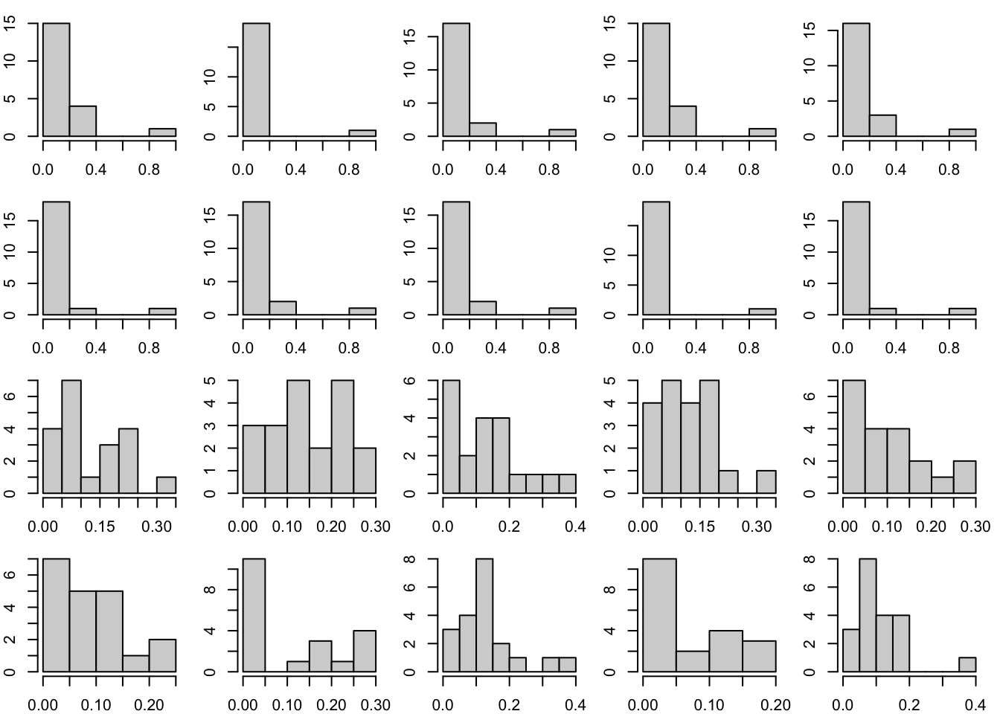
par(mfrow = c(1,1))Now, let’s apply stability selection. Based off of the histograms of the cosine similarity, I chose a threshold of 0.8.
set.seed(1)
L_est_by_col <- stability_selection_post_processing(ebcd_fits_by_col[[1]], ebcd_fits_by_col[[2]], threshold = 0.8)This is a heatmap of the final loadings estimate:
plot_heatmap(L_est_by_col, colors_range = c('blue','gray96','red'), brks = seq(-max(abs(L_est_by_col)), max(abs(L_est_by_col)), length.out = 50))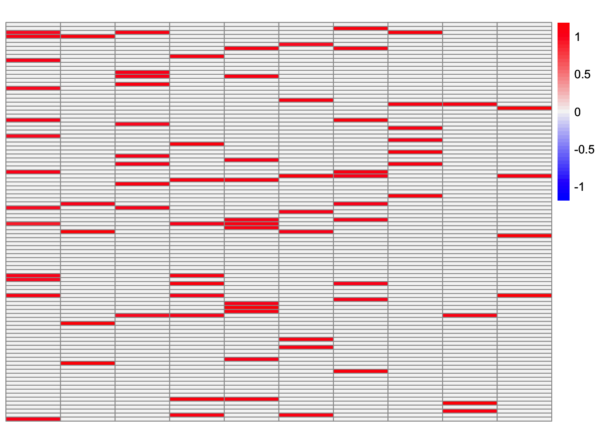
This is the correlation between the estimate and the true loadings:
apply(cor(L_est_by_col, sim_data$LL), 1, max) [1] 0.9989265 0.9987233 0.9994064 0.9991856 0.9993147 0.9991218 0.9992791
[8] 0.9992284 0.9993078 0.9988781These are the true factors which are most highly correlated with each estimated factor:
apply(cor(L_est_by_col, sim_data$LL), 1, which.max) [1] 10 2 6 4 7 9 8 3 5 1We are able to accurately recover all ten components.
Split by Row
Now, we try splitting the rows:
set.seed(1)
X_split_by_row <- stability_selection_split_data(sim_data$Y, dim = 'rows')transform_ebcd_Z <- function(Y, ebcd_obj){
Y.svd <- svd(Y)
Y.UV <- Y.svd$u %*% t(Y.svd$v)
Z_transformed <- Y.UV %*% ebcd_obj$Z
return(Z_transformed)
}This is the true loadings matrix for the first subset:
plot_heatmap(sim_data$LL[X_split_by_row[[3]],])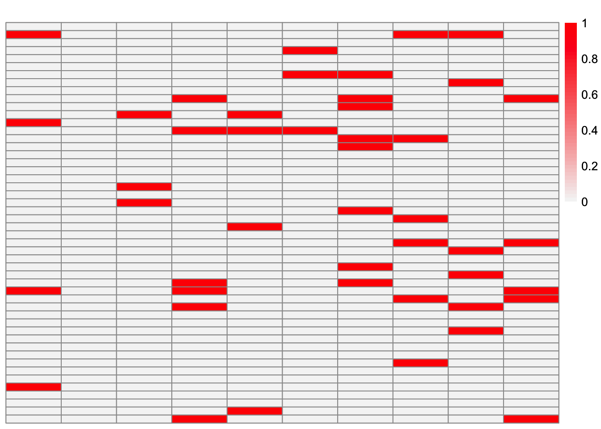
These are the number of samples per factor in the first subset:
colSums(sim_data$LL[X_split_by_row[[3]],]) [1] 4 0 3 6 4 3 8 6 6 5We see that for the first subset, there are no samples with loading in the second factor.
This is the true loadings matrix for the second subset:
plot_heatmap(sim_data$LL[X_split_by_row[[4]],])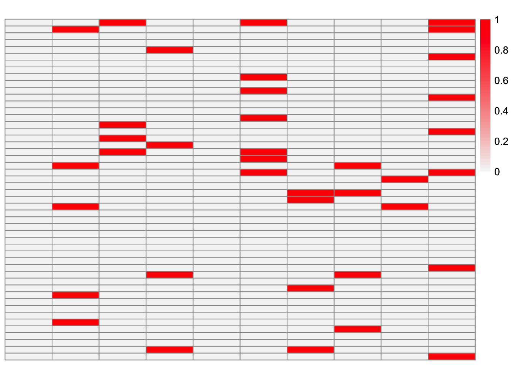
These are the number of samples per factor in the second subset:
colSums(sim_data$LL[X_split_by_row[[4]],]) [1] 0 5 4 4 0 7 4 4 2 8For the second subset, there are no samples with loading in the first or fifth factor.
set.seed(1)
ebcd_fits_by_row_L <- list()
ebcd_fits_by_row_F <- list()
for (i in 1:(length(X_split_by_row)/2)){
ebcd_fit <- ebcd::ebcd(t(X_split_by_row[[i]]),
Kmax = 20,
ebnm_fn = ebnm::ebnm_generalized_binary)
ebcd_fits_by_row_L[[i]] <- ebcd_fit$EL
ebcd_fits_by_row_F[[i]] <- transform_ebcd_Z(t(X_split_by_row[[i]]), ebcd_fit)
}This is heatmap of the loadings estimate from the first subset:
plot_heatmap(ebcd_fits_by_row_L[[1]][order(X_split_by_row[[3]]),], colors_range = c('blue','gray96','red'), brks = seq(-max(abs(ebcd_fits_by_row_L[[1]])), max(abs(ebcd_fits_by_row_L[[1]])), length.out = 50))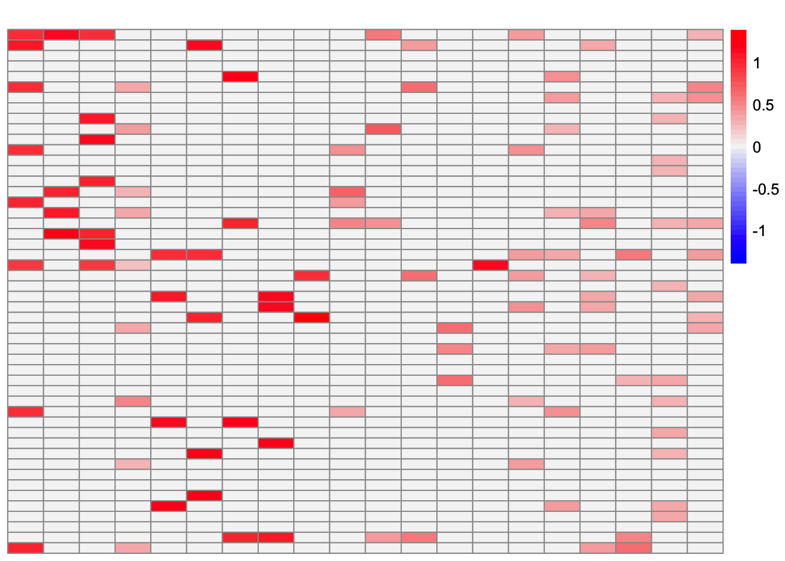
This is heatmap of the loadings estimate from the second subset:
plot_heatmap(ebcd_fits_by_row_L[[2]], colors_range = c('blue','gray96','red'), brks = seq(-max(abs(ebcd_fits_by_row_L[[2]])), max(abs(ebcd_fits_by_row_L[[2]])), length.out = 50))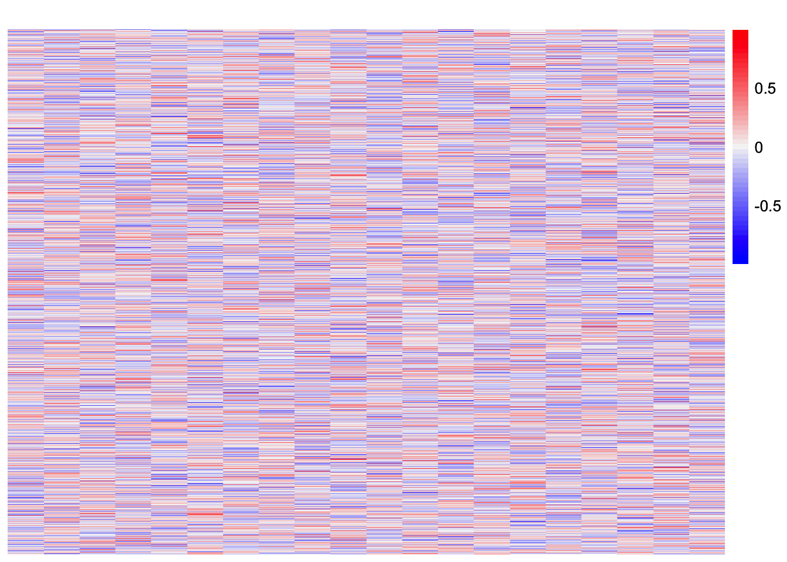
This is heatmap of the factor estimate from the first subset:
plot_heatmap(ebcd_fits_by_row_F[[1]], colors_range = c('blue','gray96','red'), brks = seq(-max(abs(ebcd_fits_by_row_F[[1]])), max(abs(ebcd_fits_by_row_F[[1]])), length.out = 50))This is the correlation between the true factors and the estimated factors:
apply(cor(ebcd_fits_by_row_F[[1]], sim_data$FF), 2, max) [1] 0.83388019 0.03895869 0.83953279 0.82687278 0.76248965 0.80834262
[7] 0.93265528 0.65980111 0.88875500 0.54809566As expected, the estimate does a poor job at recovering the second true factor (there are no samples with membership in this factor, so there is no information on this factor in this subset).
This is heatmap of the factor estimate from the second subset:
plot_heatmap(ebcd_fits_by_row_F[[2]], colors_range = c('blue','gray96','red'), brks = seq(-max(abs(ebcd_fits_by_row_F[[2]])), max(abs(ebcd_fits_by_row_F[[2]])), length.out = 50))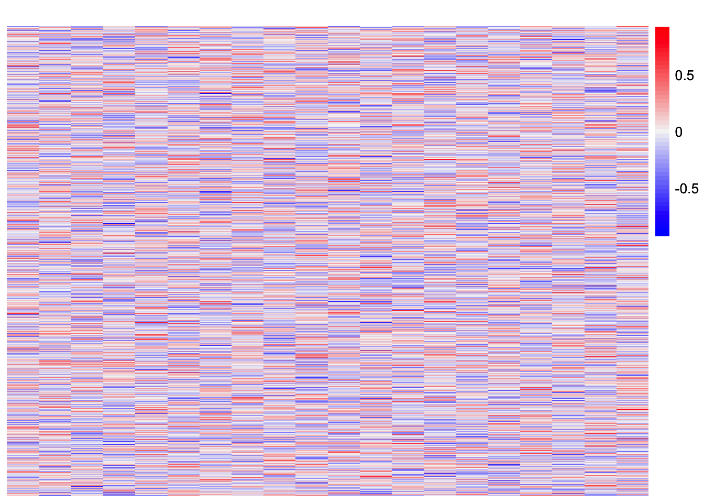
This is the correlation between the true factors and the estimated factors:
apply(cor(ebcd_fits_by_row_F[[2]], sim_data$FF), 2, max) [1] 0.05756268 0.89861718 0.87587398 0.85607434 0.03499361 0.91268530
[7] 0.86538975 0.85743791 0.76749238 0.90178423As expected, the estimate does a poor job at recovering the first and fifth true factors (for the same reasoning as the previous example).
cosine_sim_mat <- compute_cosine_sim_matrix(ebcd_fits_by_row_F[[1]], ebcd_fits_by_row_F[[2]])These are histograms of the cosine similarities for each factor of the first subset estimate:
par(mfrow = c(5,4), mar = c(2,2,1,1))
for (i in 1:ncol(ebcd_fits_by_row_F[[1]])){
hist(cosine_sim_mat[i,], main = "", xlab = paste('factor',i))
}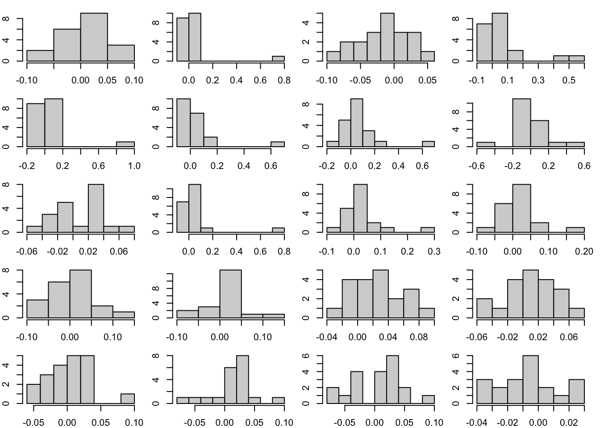
par(mfrow = c(1,1))Now we apply stability selection.
Threshold = 0.6
Based off of the histograms, I chose a threshold = 0.6.
set.seed(1)
F_est <- stability_selection_post_processing(ebcd_fits_by_row_F[[1]], ebcd_fits_by_row_F[[2]], threshold = 0.6)This is a heatmap of the final factor estimate:
plot_heatmap(F_est, colors_range = c('blue','gray96','red'), brks = seq(-max(abs(F_est)), max(abs(F_est)), length.out = 50))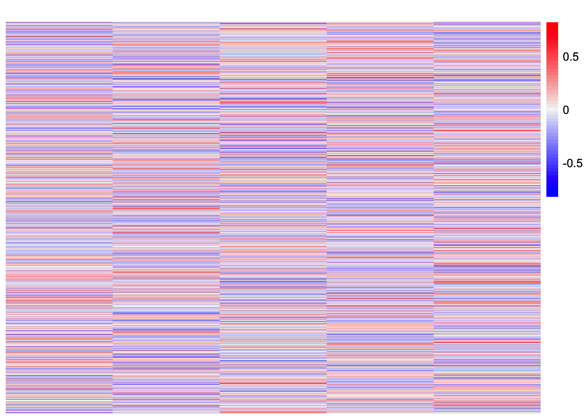
This is the correlation between the estimated factors and the true factors:
apply(cor(F_est, sim_data$FF), 1, max)[1] 0.9196308 0.9463728 0.9041337 0.9133260 0.9231902These are the true factors which are most correlated with each estimated factor:
apply(cor(F_est, sim_data$FF), 1, which.max)[1] 3 7 9 4 6We are able to recover five components. The method does not return any extra factors.
I obtain an initial estimate for \(L\) by using non-negative least squares.
# use nonnegative least squares estimate here
L_est <- t(NNLM::nnlm(x = F_est , y = t(sim_data$Y))$coefficients)This is a heatmap of the initial \(L\) estimate:
plot_heatmap(L_est, colors_range = c('blue','gray96','red'), brks = seq(-max(abs(L_est)), max(abs(L_est)), length.out = 50))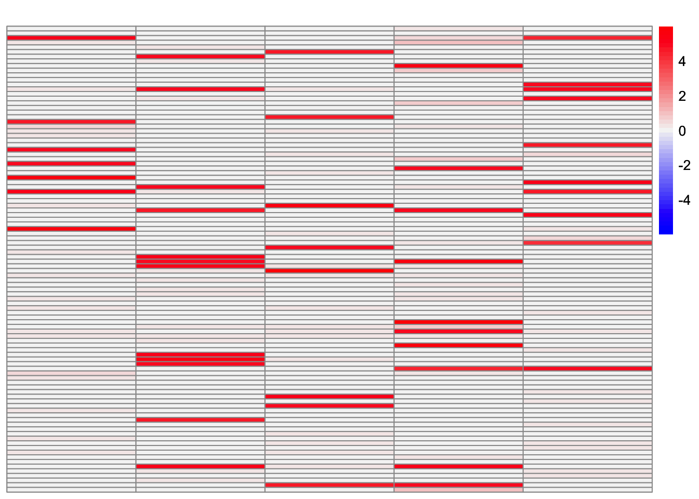
Now, we run one iteration of backfit with EBCD.
ebcd_fit_L_given_Z <- function(Y, Z, EL, ebnm_fn, maxiter = 1){
n <- nrow(Y)
p <- ncol(Y)
Kmax <- ncol(Z)
# initial estimate for tau
tau <- prod(dim(Y)) / sum((Y - (Z%*%t(EL)))^2)
V <- matrix(0, nrow = nrow(EL), ncol = ncol(EL))
for (i in 1:maxiter){
for (k in 1:Kmax) {
x <- c(crossprod(Y, Z[, k])) / n
s <- rep(sqrt(1 / (n * tau)), times=length(x))
e <- ebnm_fn(x = x, s = s)
EL[, k] <- e$posterior$mean
V[, k] <- e$posterior$sd^2
}
# update tau
tau <- prod(dim(Y)) / (sum((Y - Z %*% t(EL))^2) + n * sum(V))
}
return(EL)
}# issue: F is not orthogonal here; is that okay?
ebcd_estimate_L <- ebcd_fit_L_given_Z(t(sim_data$Y), F_est, L_est, ebnm::ebnm_generalized_binary, maxiter = 1)This is a heatmap of the final loadings estimate:
plot_heatmap(ebcd_estimate_L)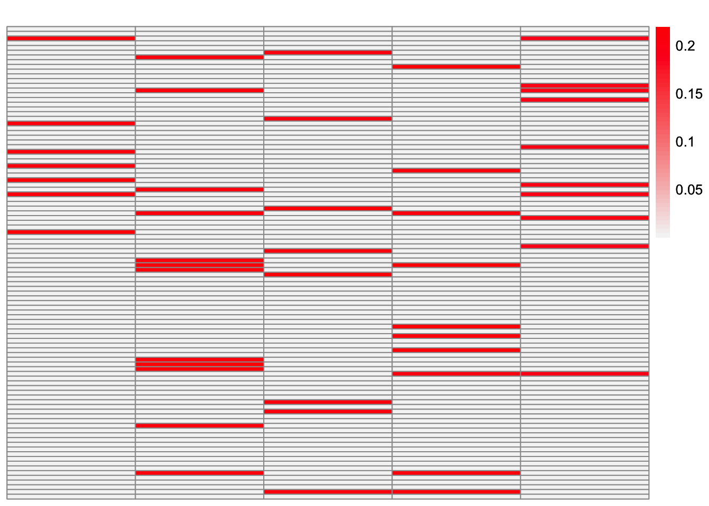
This is the correlation between the estimated loadings and the true loadings:
apply(cor(ebcd_estimate_L, sim_data$LL), 1, max)[1] 0.9998380 0.9999360 0.9997398 0.9997603 0.9999073These are the true loadings which are most correlated with each estimated loadings factor:
apply(cor(ebcd_estimate_L, sim_data$LL), 1, which.max)[1] 3 7 9 4 6We are able to accurately recover five components.
For brevity, I do not include the version of backfitting which uses an orthogonal matrix for the \(F\) estimate. But I suspect the results would be about the same.
Threshold = 0.1
For comparison, I tried applying stability selection with other thresholds. I tested a couple of other thresholds and found that 0.1 was the smallest threshold that did not return any spurious factors.
set.seed(1)
F_est <- stability_selection_post_processing(ebcd_fits_by_row_F[[1]], ebcd_fits_by_row_F[[2]], threshold = 0.1)This is a heatmap of the final factor estimate:
plot_heatmap(F_est, colors_range = c('blue','gray96','red'), brks = seq(-max(abs(F_est)), max(abs(F_est)), length.out = 50))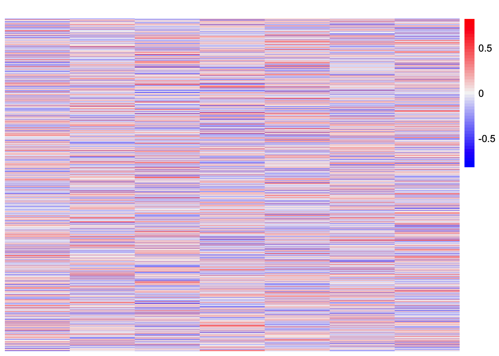
This is the correlation between the estimated factors and the true factors:
apply(cor(F_est, sim_data$FF), 1, max)[1] 0.9196308 0.8443383 0.9463728 0.9041337 0.9133260 0.8228272 0.9231902These are the true factors which are most correlated with each estimated factor:
apply(cor(F_est, sim_data$FF), 1, which.max)[1] 3 10 7 9 4 8 6We are able to recover five components. The method does not return any extra factors.
I obtain an initial estimate for \(L\) by using non-negative least squares.
# use nonnegative least squares estimate here
L_est <- t(NNLM::nnlm(x = F_est , y = t(sim_data$Y))$coefficients)This is a heatmap of the initial \(L\) estimate:
plot_heatmap(L_est, colors_range = c('blue','gray96','red'), brks = seq(-max(abs(L_est)), max(abs(L_est)), length.out = 50))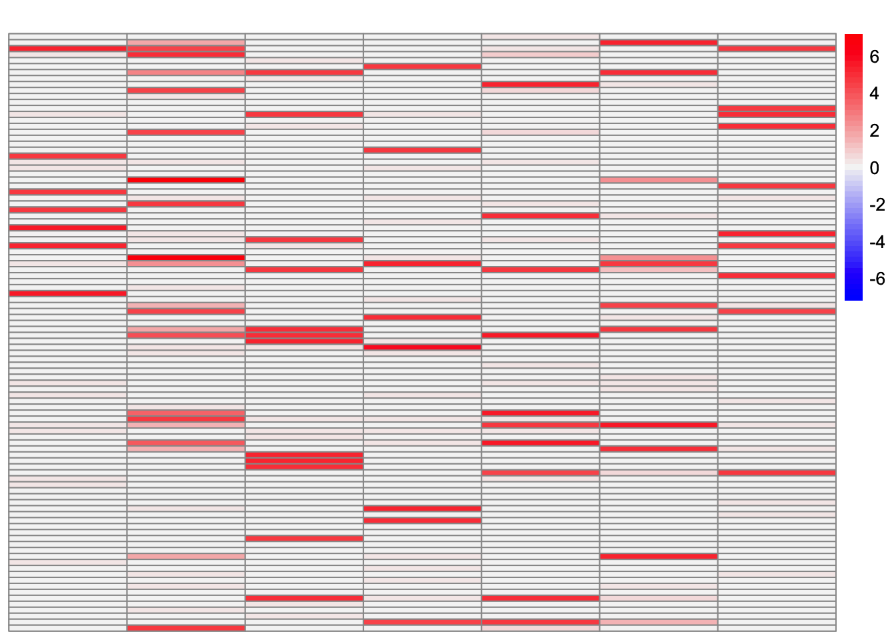
Now, we run one iteration of backfit with EBCD.
# issue: F is not orthogonal here; is that okay?
ebcd_estimate_L <- ebcd_fit_L_given_Z(t(sim_data$Y), F_est, L_est, ebnm::ebnm_generalized_binary, maxiter = 1)This is a heatmap of the final loadings estimate:
plot_heatmap(ebcd_estimate_L)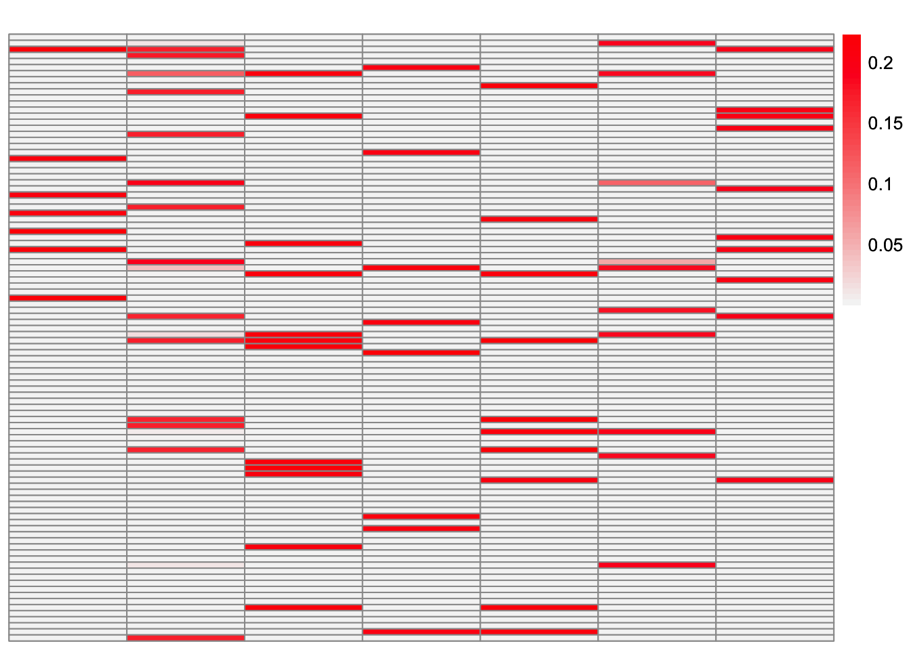
This is the correlation between the estimated loadings and the true loadings:
apply(cor(ebcd_estimate_L, sim_data$LL), 1, max)[1] 0.9997883 0.9771488 0.9999162 0.9996650 0.9996866 0.9646741 0.9998772These are the true loadings which are most correlated with each estimated loadings factor:
apply(cor(ebcd_estimate_L, sim_data$LL), 1, which.max)[1] 3 10 7 9 4 8 6We are able to accurately recover seven components, which is realistically the maximum number of components we can recover. (Recall, there are three factors which are only present in one of the two subsets).
GBCD
In this section, I test the method with GBCD.
Split by Column
set.seed(1)
X_split_by_col <- stability_selection_split_data(sim_data$Y, dim = 'columns')gbcd_fits_by_col <- list()
for (i in 1:(length(X_split_by_col)/2)){
gbcd_fits_by_col[[i]] <- gbcd::fit_gbcd(X_split_by_col[[i]],
Kmax = 10,
prior = ebnm::ebnm_generalized_binary,
verbose = 0)$L
}[1] "Form cell by cell covariance matrix..."
user system elapsed
0.003 0.000 0.003
[1] "Initialize GEP membership matrix L..."
Adding factor 1 to flash object...
Wrapping up...
Done.
Adding factor 2 to flash object...
Adding factor 3 to flash object...
Adding factor 4 to flash object...
Adding factor 5 to flash object...
Adding factor 6 to flash object...
Adding factor 7 to flash object...
Adding factor 8 to flash object...
Adding factor 9 to flash object...
Adding factor 10 to flash object...
Wrapping up...
Done.Warning in report.maxiter.reached(verbose.lvl): Maximum number of iterations
reached. user system elapsed
3.832 0.140 3.982
[1] "Estimate GEP membership matrix L..."
--Estimate of factor 10 is numerically zero!
--Estimate of factor 10 is numerically zero!
--Estimate of factor 20 is numerically zero!
--Estimate of factor 9 is numerically zero!
--Estimate of factor 10 is numerically zero!
--Estimate of factor 9 is numerically zero!
--Estimate of factor 10 is numerically zero!
--Estimate of factor 9 is numerically zero!
--Estimate of factor 10 is numerically zero!
--Estimate of factor 9 is numerically zero!
--Estimate of factor 10 is numerically zero!
--Estimate of factor 9 is numerically zero!
--Estimate of factor 10 is numerically zero!
--Estimate of factor 9 is numerically zero!
--Estimate of factor 10 is numerically zero!
--Estimate of factor 9 is numerically zero!
--Estimate of factor 10 is numerically zero!
--Estimate of factor 9 is numerically zero!
--Estimate of factor 10 is numerically zero!
--Estimate of factor 9 is numerically zero!
--Estimate of factor 10 is numerically zero!
--Estimate of factor 10 is numerically zero!
--Estimate of factor 10 is numerically zero!
--Estimate of factor 6 is numerically zero!
--Estimate of factor 10 is numerically zero!
--Estimate of factor 10 is numerically zero!
--Estimate of factor 10 is numerically zero!
--Estimate of factor 10 is numerically zero!
--Estimate of factor 10 is numerically zero!
--Estimate of factor 10 is numerically zero!
--Estimate of factor 10 is numerically zero!Warning in report.maxiter.reached(verbose.lvl): Maximum number of iterations
reached. --Estimate of factor 8 is numerically zero!
--Estimate of factor 8 is numerically zero!
--Estimate of factor 2 is numerically zero!
user system elapsed
13.446 0.301 13.842
[1] "Estimate GEP signature matrix F..."
Backfitting 16 factors (tolerance: 7.45e-04)...
--Estimate of factor 13 is numerically zero!
--Estimate of factor 14 is numerically zero!
--Estimate of factor 12 is numerically zero!
Difference between iterations is within 1.0e+01...
--Estimate of factor 9 is numerically zero!
Difference between iterations is within 1.0e+00...
--Maximum number of iterations reached!
Wrapping up...
Done.
user system elapsed
18.433 0.456 19.082
[1] "Form cell by cell covariance matrix..."
user system elapsed
0.002 0.000 0.001
[1] "Initialize GEP membership matrix L..."
Adding factor 1 to flash object...
Wrapping up...
Done.
Adding factor 2 to flash object...
Adding factor 3 to flash object...
Adding factor 4 to flash object...
Adding factor 5 to flash object...
Adding factor 6 to flash object...
Adding factor 7 to flash object...
Adding factor 8 to flash object...
Adding factor 9 to flash object...
Adding factor 10 to flash object...
Wrapping up...
Done.Warning in report.maxiter.reached(verbose.lvl): Maximum number of iterations
reached. user system elapsed
3.475 0.123 3.611
[1] "Estimate GEP membership matrix L..."
--Estimate of factor 17 is numerically zero!
--Estimate of factor 20 is numerically zero!
--Estimate of factor 10 is numerically zero!
--Estimate of factor 14 is numerically zero!
--Estimate of factor 9 is numerically zero!
--Estimate of factor 16 is numerically zero!
--Estimate of factor 6 is numerically zero!
--Estimate of factor 2 is numerically zero!Warning in report.maxiter.reached(verbose.lvl): Maximum number of iterations
reached. user system elapsed
8.769 0.197 9.040
[1] "Estimate GEP signature matrix F..."
Backfitting 11 factors (tolerance: 7.45e-04)...
Difference between iterations is within 1.0e+01...
--Estimate of factor 11 is numerically zero!
Difference between iterations is within 1.0e+00...
Difference between iterations is within 1.0e-01...
Wrapping up...
Done.
user system elapsed
0.833 0.019 0.859 This is heatmap of the loadings estimate from the first subset:
plot_heatmap(gbcd_fits_by_col[[1]], colors_range = c('blue','gray96','red'), brks = seq(-max(abs(gbcd_fits_by_col[[1]])), max(abs(gbcd_fits_by_col[[1]])), length.out = 50))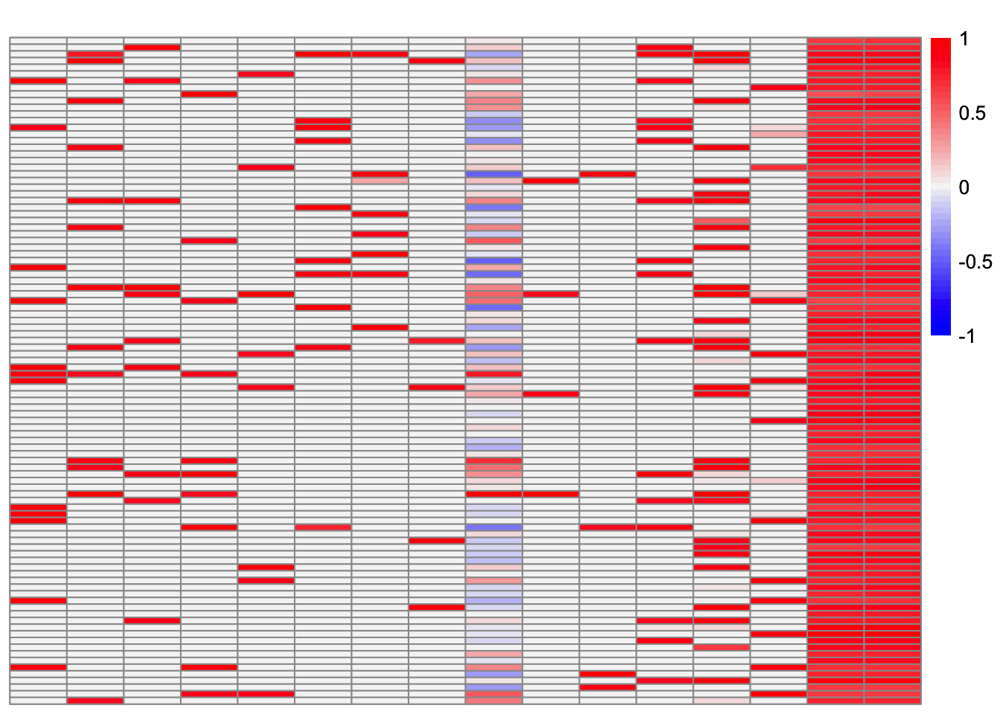
This is the max correlation for each true factor:
apply(cor(gbcd_fits_by_col[[1]], sim_data$LL), 2, max) [1] 0.9969078 0.9969002 0.9925557 0.9969888 0.9977103 0.9970436 0.9989244
[8] 0.9975937 0.9977051 0.9971502All of the factors are accurately recovered.
This is a heatmap of the loadings estimate from the second subset:
plot_heatmap(gbcd_fits_by_col[[2]], colors_range = c('blue','gray96','red'), brks = seq(-max(abs(gbcd_fits_by_col[[2]])), max(abs(gbcd_fits_by_col[[2]])), length.out = 50))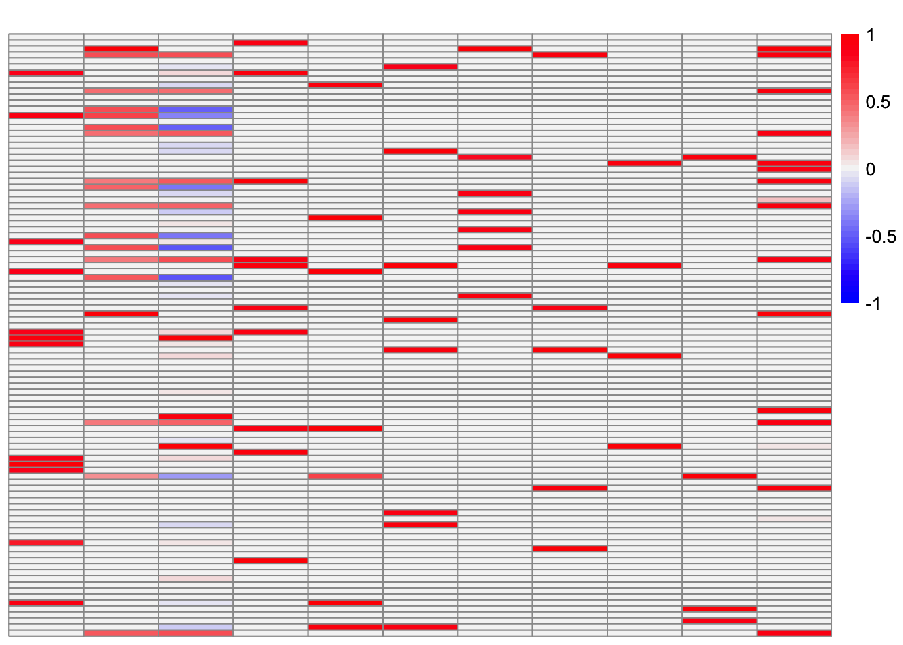
This is the max correlation for each true factor:
apply(cor(gbcd_fits_by_col[[2]], sim_data$LL), 2, max) [1] 0.9995250 0.9993972 0.9984350 0.8136923 0.9988429 0.7807317 0.9980312
[8] 0.9990899 0.9984341 0.7690615True factors 4,6, and 10 are not recovered as well. So I expect the stability selection method will have a harder time recovering these factors.
These are histograms of the similarities:
L1_L2_cosine_sim_mat <- compute_cosine_sim_matrix(gbcd_fits_by_col[[1]], gbcd_fits_by_col[[2]])par(mfrow = c(4,4))
for(i in 1:nrow(L1_L2_cosine_sim_mat)){
hist(L1_L2_cosine_sim_mat[i,], xlab = "", ylab = "", main = paste('factor',i))
}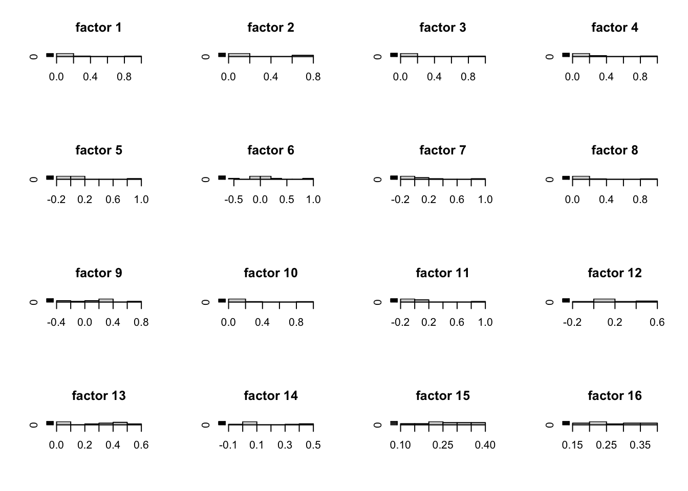
par(mfrow = c(1,1))Now we apply stability selection. From the histograms above, I decided to apply stability selection with a threshold of 0.8.
set.seed(1)
L_est_by_col <- stability_selection_post_processing(gbcd_fits_by_col[[1]], gbcd_fits_by_col[[2]], threshold = 0.8)This is a heatmap of the final loadings estimate:
plot_heatmap(L_est_by_col, colors_range = c('blue','gray96','red'), brks = seq(-max(abs(L_est_by_col)), max(abs(L_est_by_col)), length.out = 50))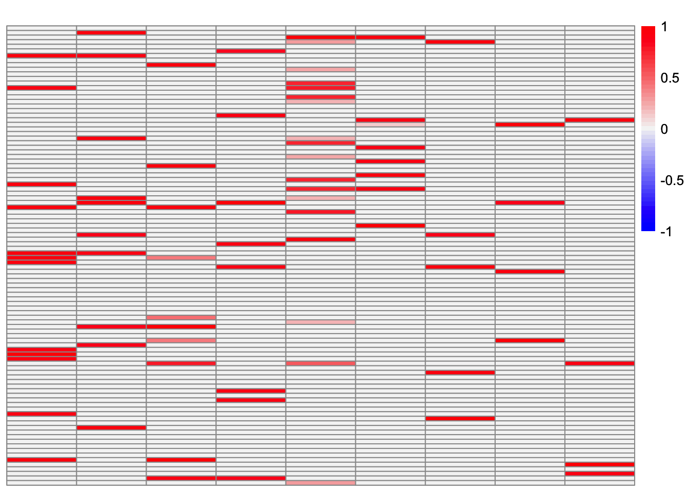
This is the correlation between the estimate and the true loadings:
apply(cor(L_est_by_col, sim_data$LL), 1, max)[1] 0.9994279 0.9993559 0.9523691 0.9986958 0.9517865 0.9979227 0.9988531
[8] 0.9988606 0.9991091These are the true loadings factors which are most correlated with each estimated loadings factor:
apply(cor(L_est_by_col, sim_data$LL), 1, which.max)[1] 7 8 4 9 6 3 2 1 5These are the true factors that we were able to recover (the correlation was larger than 0.9):
apply(cor(L_est_by_col, sim_data$LL), 1, which.max)[apply(cor(L_est_by_col, sim_data$LL), 1, max) > 0.9][1] 7 8 4 9 6 3 2 1 5We are able to recover nine of the ten components. Component 10 was well recovered in the first subset, but not in the second subset. So perhaps the factors that corresponded most with true factor 10 were not paired together, or if they were paired together, their similarity was not high enough. (After further investigation, it seems to be the former.)
Split by Row
Now, we try splitting the rows:
set.seed(1)
X_split_by_row <- stability_selection_split_data(sim_data$Y, dim = 'rows')gbcd_fits_by_row_F <- list()
gbcd_fits_by_row_L <- list()
for (i in 1:(length(X_split_by_row)/2)){
gbcd_fit <- gbcd::fit_gbcd(X_split_by_row[[i]],
Kmax = 10,
prior = ebnm::ebnm_generalized_binary,
verbose = 0)
gbcd_fits_by_row_F[[i]] <- gbcd_fit$F$lfc
gbcd_fits_by_row_L[[i]] <- gbcd_fit$L
}[1] "Form cell by cell covariance matrix..."
user system elapsed
0.001 0.000 0.001
[1] "Initialize GEP membership matrix L..."
Adding factor 1 to flash object...
Wrapping up...
Done.
Adding factor 2 to flash object...
Adding factor 3 to flash object...
Adding factor 4 to flash object...
Adding factor 5 to flash object...
Adding factor 6 to flash object...
Adding factor 7 to flash object...
Adding factor 8 to flash object...
Adding factor 9 to flash object...
Factor doesn't significantly increase objective and won't be added.
Wrapping up...
Done.Warning in report.maxiter.reached(verbose.lvl): Maximum number of iterations
reached. user system elapsed
1.723 0.044 1.807
[1] "Estimate GEP membership matrix L..."
--Estimate of factor 13 is numerically zero!
--Estimate of factor 13 is numerically zero!
--Estimate of factor 13 is numerically zero!
--Estimate of factor 13 is numerically zero!
--Estimate of factor 13 is numerically zero!
--Estimate of factor 13 is numerically zero!
--Estimate of factor 13 is numerically zero!
--Estimate of factor 13 is numerically zero!
--Estimate of factor 13 is numerically zero!
--Estimate of factor 13 is numerically zero!
--Estimate of factor 13 is numerically zero!
--Estimate of factor 13 is numerically zero!
--Estimate of factor 13 is numerically zero!
--Estimate of factor 13 is numerically zero!
--Estimate of factor 13 is numerically zero!
--Estimate of factor 13 is numerically zero!
--Estimate of factor 13 is numerically zero!
--Estimate of factor 13 is numerically zero!
--Estimate of factor 13 is numerically zero!
--Estimate of factor 13 is numerically zero!Warning in report.maxiter.reached(verbose.lvl): Maximum number of iterations
reached. --Estimate of factor 13 is numerically zero!
--Estimate of factor 11 is numerically zero!
--Estimate of factor 6 is numerically zero!
--Estimate of factor 8 is numerically zero!
user system elapsed
17.002 0.290 17.379
[1] "Estimate GEP signature matrix F..."
Backfitting 15 factors (tolerance: 7.45e-04)...
Difference between iterations is within 1.0e+01...
Difference between iterations is within 1.0e+00...
An update to factor 13 decreased the objective by 5.249e-06.
An update to factor 13 decreased the objective by 1.248e-06.
An update to factor 13 decreased the objective by 1.108e-06.
An update to factor 13 decreased the objective by 3.614e-06.
An update to factor 13 decreased the objective by 4.466e-07.
An update to factor 13 decreased the objective by 2.980e-05.
An update to factor 13 decreased the objective by 6.714e-06.
An update to factor 13 decreased the objective by 5.056e-06.
An update to factor 13 decreased the objective by 2.256e-06.
An update to factor 13 decreased the objective by 3.978e-06.
An update to factor 13 decreased the objective by 6.831e-06.
An update to factor 13 decreased the objective by 3.538e-06.
--Maximum number of iterations reached!
Wrapping up...
Done.
user system elapsed
32.627 1.155 33.892
[1] "Form cell by cell covariance matrix..."
user system elapsed
0.001 0.000 0.001
[1] "Initialize GEP membership matrix L..."
Adding factor 1 to flash object...
Wrapping up...
Done.
Adding factor 2 to flash object...
Adding factor 3 to flash object...
Adding factor 4 to flash object...
Adding factor 5 to flash object...
Adding factor 6 to flash object...
Adding factor 7 to flash object...
Adding factor 8 to flash object...
Adding factor 9 to flash object...
Adding factor 10 to flash object...
Wrapping up...
Done.Warning in report.maxiter.reached(verbose.lvl): Maximum number of iterations
reached. --Estimate of factor 10 is numerically zero!
--Estimate of factor 9 is numerically zero!
user system elapsed
2.396 0.058 2.459
[1] "Estimate GEP membership matrix L..."
--Estimate of factor 8 is numerically zero!
--Estimate of factor 8 is numerically zero!
user system elapsed
12.015 0.285 12.347
[1] "Estimate GEP signature matrix F..."
Backfitting 11 factors (tolerance: 7.45e-04)...
Difference between iterations is within 1.0e+01...
--Estimate of factor 10 is numerically zero!
Difference between iterations is within 1.0e+00...
--Maximum number of iterations reached!
Wrapping up...
Done.
user system elapsed
23.039 0.794 23.921 This is heatmap of the factor estimate from the first subset:
plot_heatmap(gbcd_fits_by_row_F[[1]], colors_range = c('blue','gray96','red'), brks = seq(-max(abs(gbcd_fits_by_row_F[[1]])), max(abs(gbcd_fits_by_row_F[[1]])), length.out = 50))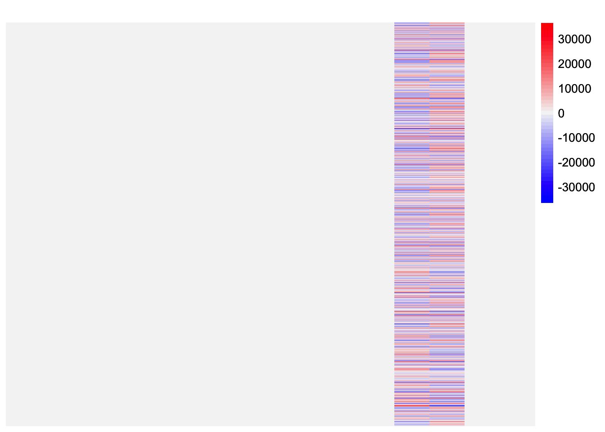
This is the correlation between the true factors and the estimated factors:
apply(cor(gbcd_fits_by_row_F[[1]], sim_data$FF), 2, max) [1] 0.85837599 0.04475923 0.79641861 0.54581359 0.76818525 0.80171590
[7] 0.85176214 0.69773967 0.89358556 0.59718096This is heatmap of the factor estimate from the second subset:
plot_heatmap(gbcd_fits_by_row_F[[2]], colors_range = c('blue','gray96','red'), brks = seq(-max(abs(gbcd_fits_by_row_F[[2]])), max(abs(gbcd_fits_by_row_F[[2]])), length.out = 50))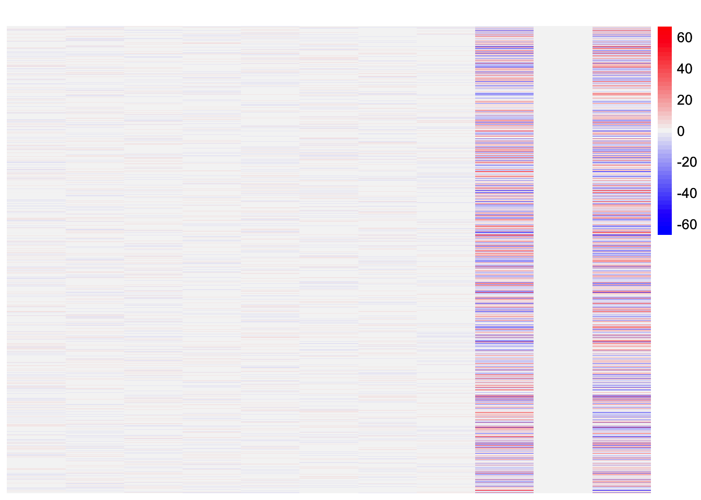
This is the correlation between the true factors and the estimated factors:
apply(cor(gbcd_fits_by_row_F[[2]], sim_data$FF), 2, max)Warning in cor(gbcd_fits_by_row_F[[2]], sim_data$FF): the standard deviation is
zero [1] NA NA NA NA NA NA NA NA NA NATo process the factor estimates, I first remove factors which are essentially zero vectors.
for (j in 1:2){
idx.keep <- apply(gbcd_fits_by_row_F[[j]], 2, function(x){sqrt(sum(x^2))}) > 10^(-10)
gbcd_fits_by_row_F[[j]] <- gbcd_fits_by_row_F[[j]][,idx.keep]
}I also normalize all of factors to have l2 norm = 1.
gbcd_fits_by_row_F <- lapply(gbcd_fits_by_row_F, function(x){t(t(x)/sqrt(colSums(x^2)))})This is heatmap of the new factor estimate from the first subset:
plot_heatmap(gbcd_fits_by_row_F[[1]], colors_range = c('blue','gray96','red'), brks = seq(-max(abs(gbcd_fits_by_row_F[[1]])), max(abs(gbcd_fits_by_row_F[[1]])), length.out = 50))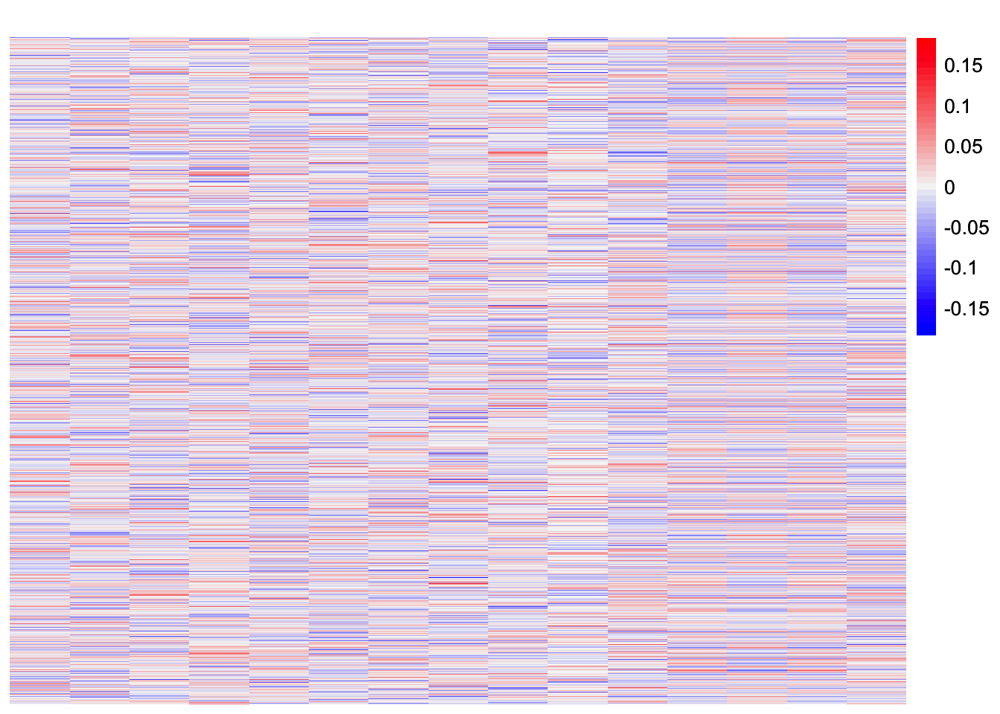
This is heatmap of the new factor estimate from the second subset:
plot_heatmap(gbcd_fits_by_row_F[[2]], colors_range = c('blue','gray96','red'), brks = seq(-max(abs(gbcd_fits_by_row_F[[2]])), max(abs(gbcd_fits_by_row_F[[2]])), length.out = 50))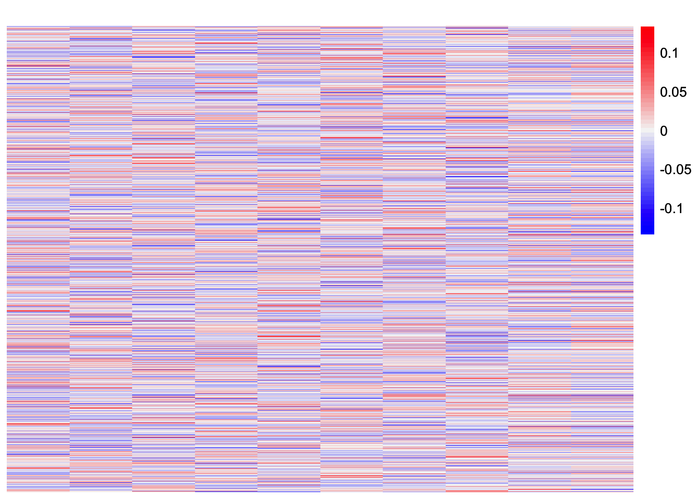
These are histograms of the similarities:
F1_F2_cosine_sim_mat <- compute_cosine_sim_matrix(gbcd_fits_by_row_F[[1]], gbcd_fits_by_row_F[[2]])par(mfrow = c(4,4))
for(i in 1:nrow(F1_F2_cosine_sim_mat)){
hist(F1_F2_cosine_sim_mat[i,], xlab = "", ylab = "", main = paste('factor',i))
}
par(mfrow = c(1,1))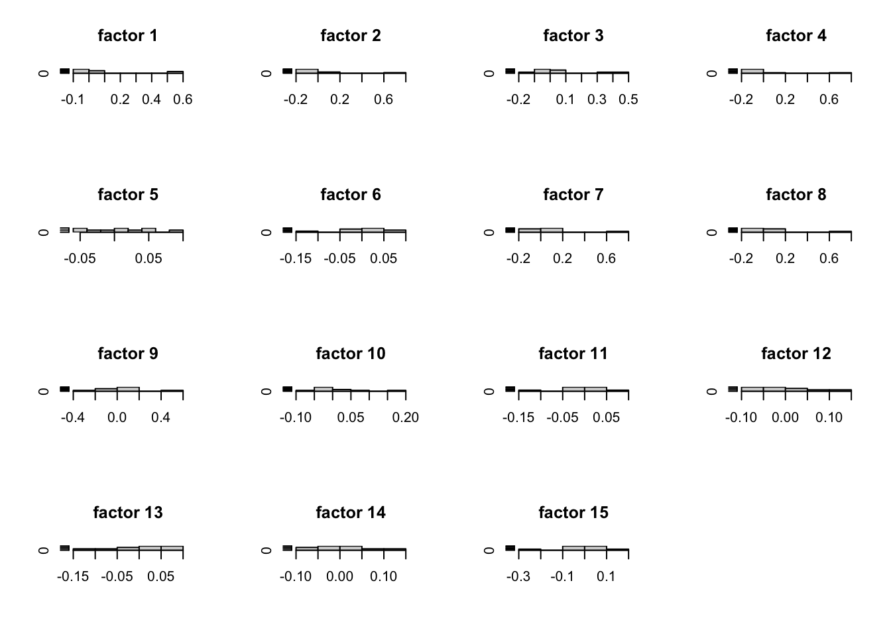
Now, we apply stability selection.
Threshold = 0.6
After analyzing the cosine similarity matrix and histograms, I chose a similarity threshold of 0.6.
set.seed(1)
F_est <- stability_selection_post_processing(gbcd_fits_by_row_F[[1]], gbcd_fits_by_row_F[[2]], threshold = 0.6)This is a heatmap of the final factor estimate:
plot_heatmap(F_est, colors_range = c('blue','gray96','red'), brks = seq(-max(abs(F_est)), max(abs(F_est)), length.out = 50))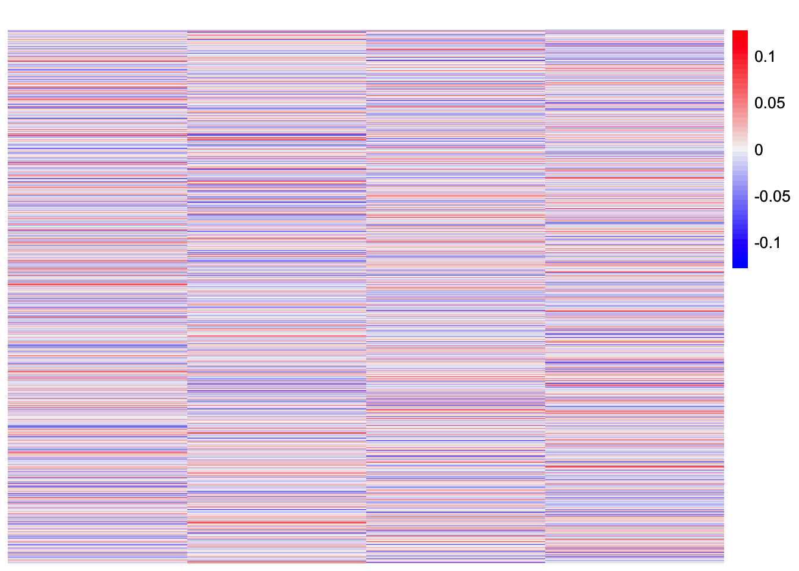
This is the correlation between the estimated factors and true factors:
apply(cor(F_est, sim_data$FF), 1, max)[1] 0.9208813 0.9123120 0.8996290 0.9226177These are the true factors that are most correlated with each estimated factor:
apply(cor(F_est, sim_data$FF), 1, which.max)[1] 7 9 3 6We recover four of the ten factors.
I obtain an initial estimate for \(L\) using non-negative least squares.
# use nonnegative least squares estimate here
L_est <- t(NNLM::nnlm(x = F_est , y = t(sim_data$Y))$coefficients)plot_heatmap(L_est, colors_range = c('blue','gray96','red'), brks = seq(-max(abs(L_est)), max(abs(L_est)), length.out = 50))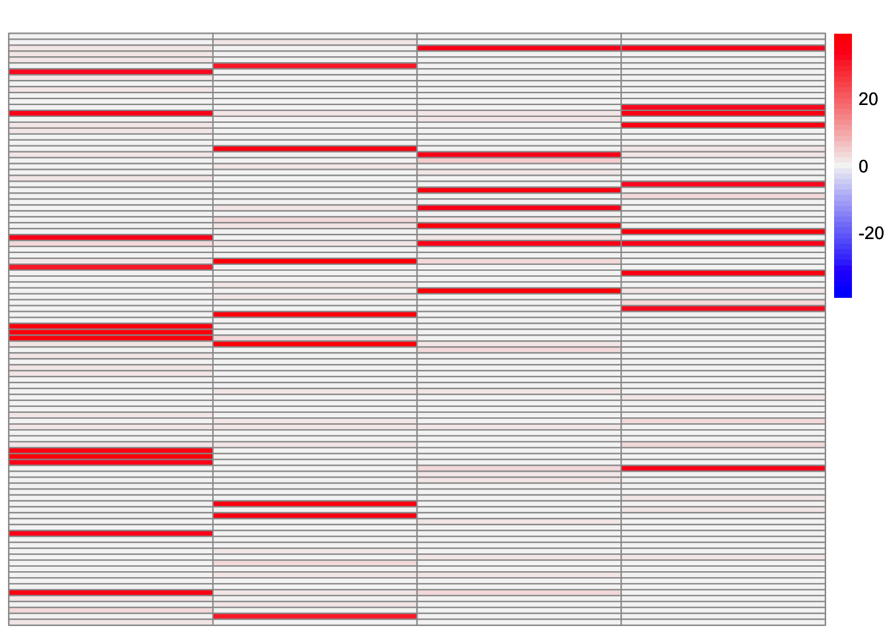
The \(L\) estimate has the main components. Now, I run backfitting with flash on the data matrix with \(F\) fixed to the consensus estimate to get an estimate for \(L\). I use the generalized binary prior for \(L\). Note I run the backfit for only one iteration.
flash_estimate_L <- flash_init(sim_data$Y) %>%
flash_factors_init(list(L_est, F_est), ebnm_fn = c(ebnm::ebnm_generalized_binary, ebnm::ebnm_point_laplace)) %>%
flash_factors_fix(kset = 1:ncol(F_est), which_dim = 'factors') %>%
flash_backfit(maxiter = 1) %>%
flash_nullcheck()Backfitting 4 factors (tolerance: 1.49e-03)...
--Maximum number of iterations reached!
Wrapping up...
Done.
Nullchecking 4 factors...
Done.This is a heatmap of the final loadings estimate:
plot_heatmap(flash_estimate_L$L_pm)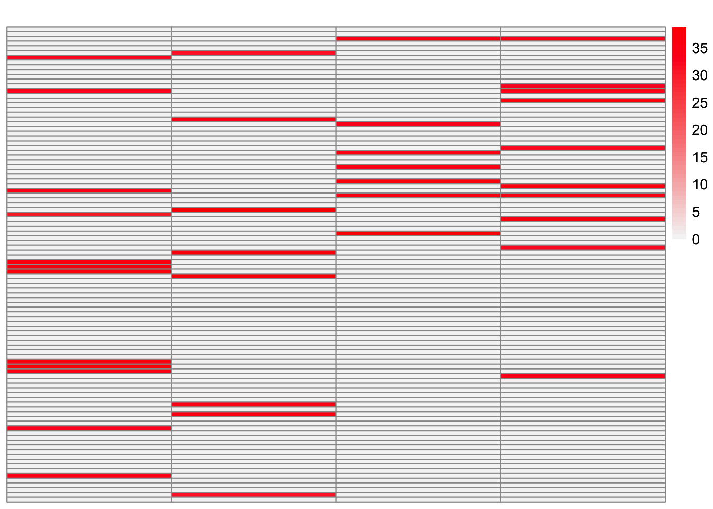
The one backfit iteration helps make the estimate more sparse, shrinking the small values to zero.
This is the correlation between the estimated loadings and the true loadings:
apply(cor(flash_estimate_L$L_pm, sim_data$LL), 1, max)[1] 0.9977829 0.9969016 0.9988324 0.9992738These are the true loadings which are most correlated with each estimated loadings factor:
apply(cor(flash_estimate_L$L_pm, sim_data$LL), 1, max)[1] 0.9977829 0.9969016 0.9988324 0.9992738Threshold = 0.1
For comparison, I also tried a threshold of 0.1. (I also tried other thresholds, and this is the smallest one I found that did not return any extra factors).
set.seed(1)
F_est <- stability_selection_post_processing(gbcd_fits_by_row_F[[1]], gbcd_fits_by_row_F[[2]], threshold = 0.1)This is a heatmap of the final factor estimate:
plot_heatmap(F_est, colors_range = c('blue','gray96','red'), brks = seq(-max(abs(F_est)), max(abs(F_est)), length.out = 50))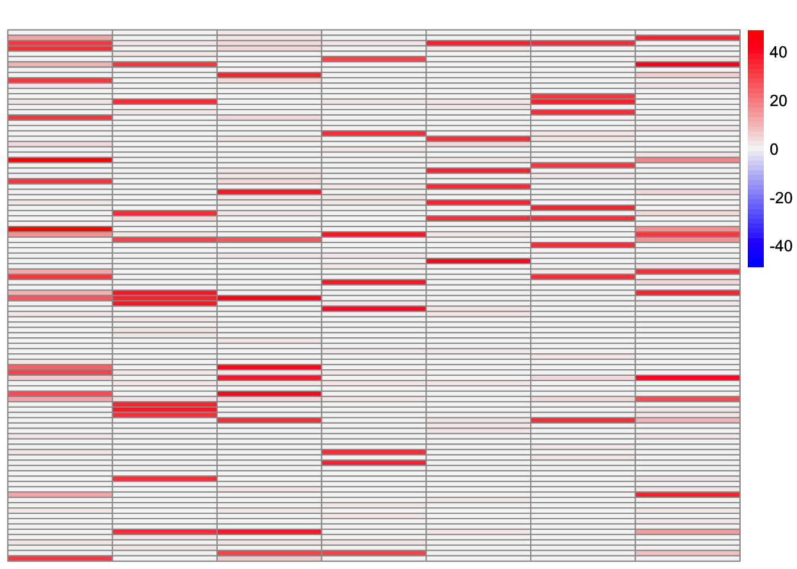
This is the correlation between the estimated factors and true factors:
apply(cor(F_est, sim_data$FF), 1, max)[1] 0.8513445 0.9208813 0.8308452 0.9123120 0.8996290 0.9226177 0.7974319These are the true factors that are most correlated with each estimated factor:
apply(cor(F_est, sim_data$FF), 1, which.max)[1] 10 7 4 9 3 6 8We recover seven of the ten factors.
I obtain an initial estimate for \(L\) using non-negative least squares.
# use nonnegative least squares estimate here
L_est <- t(NNLM::nnlm(x = F_est , y = t(sim_data$Y))$coefficients)plot_heatmap(L_est, colors_range = c('blue','gray96','red'), brks = seq(-max(abs(L_est)), max(abs(L_est)), length.out = 50))The \(L\) estimate has the main components. Now, I run backfitting with flash on the data matrix with \(F\) fixed to the consensus estimate to get an estimate for \(L\). I use the generalized binary prior for \(L\). Note I run the backfit for only one iteration.
flash_estimate_L <- flash_init(sim_data$Y) %>%
flash_factors_init(list(L_est, F_est), ebnm_fn = c(ebnm::ebnm_generalized_binary, ebnm::ebnm_point_laplace)) %>%
flash_factors_fix(kset = 1:ncol(F_est), which_dim = 'factors') %>%
flash_backfit(maxiter = 1) %>%
flash_nullcheck()Backfitting 7 factors (tolerance: 1.49e-03)...
--Maximum number of iterations reached!
Wrapping up...
Done.
Nullchecking 7 factors...
Done.This is a heatmap of the final loadings estimate:
plot_heatmap(flash_estimate_L$L_pm)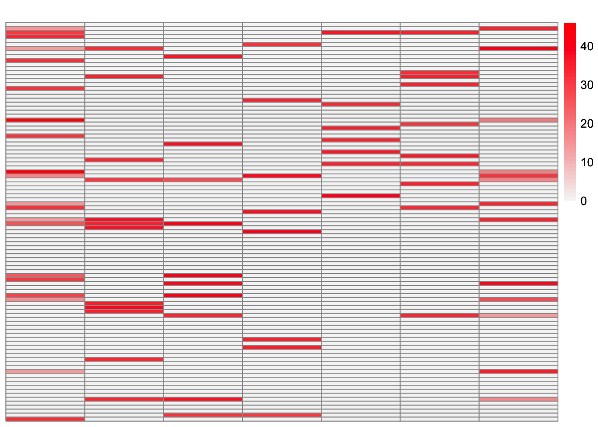
The one backfit iteration helps make the estimate more sparse, shrinking the small values to zero.
This is the correlation between the estimated loadings and the true loadings:
apply(cor(flash_estimate_L$L_pm, sim_data$LL), 1, max)[1] 0.9247405 0.9977944 0.9931679 0.9962887 0.9988635 0.9993041 0.9353693These are the true loadings which are most correlated with each estimated loadings factor:
apply(cor(flash_estimate_L$L_pm, sim_data$LL), 1, which.max)[1] 10 7 4 9 3 6 8
sessionInfo()R version 4.5.1 (2025-06-13)
Platform: aarch64-apple-darwin20
Running under: macOS Sequoia 15.6
Matrix products: default
BLAS: /Library/Frameworks/R.framework/Versions/4.5-arm64/Resources/lib/libRblas.0.dylib
LAPACK: /Library/Frameworks/R.framework/Versions/4.5-arm64/Resources/lib/libRlapack.dylib; LAPACK version 3.12.1
locale:
[1] en_US.UTF-8/en_US.UTF-8/en_US.UTF-8/C/en_US.UTF-8/en_US.UTF-8
time zone: America/Chicago
tzcode source: internal
attached base packages:
[1] stats graphics grDevices utils datasets methods base
other attached packages:
[1] flashier_1.0.56 ebnm_1.1-38 pheatmap_1.0.13 ggplot2_4.0.0
[5] dplyr_1.1.4 workflowr_1.7.2
loaded via a namespace (and not attached):
[1] tidyselect_1.2.1 viridisLite_0.4.2 farver_2.1.2
[4] S7_0.2.0 fastmap_1.2.0 lazyeval_0.2.2
[7] promises_1.3.3 digest_0.6.37 lifecycle_1.0.4
[10] processx_3.8.6 invgamma_1.2 magrittr_2.0.4
[13] compiler_4.5.1 rlang_1.1.6 sass_0.4.10
[16] progress_1.2.3 tools_4.5.1 yaml_2.3.10
[19] data.table_1.17.8 knitr_1.50 prettyunits_1.2.0
[22] htmlwidgets_1.6.4 scatterplot3d_0.3-44 RColorBrewer_1.1-3
[25] Rtsne_0.17 withr_3.0.2 purrr_1.1.0
[28] grid_4.5.1 git2r_0.36.2 fastTopics_0.6-192
[31] colorspace_2.1-2 scales_1.4.0 gtools_3.9.5
[34] cli_3.6.5 rmarkdown_2.30 crayon_1.5.3
[37] generics_0.1.4 RcppParallel_5.1.11-1 rstudioapi_0.17.1
[40] httr_1.4.7 pbapply_1.7-4 cachem_1.1.0
[43] RcppHungarian_0.3 stringr_1.5.2 splines_4.5.1
[46] parallel_4.5.1 softImpute_1.4-3 vctrs_0.6.5
[49] Matrix_1.7-3 jsonlite_2.0.0 callr_3.7.6
[52] hms_1.1.3 mixsqp_0.3-54 ggrepel_0.9.6
[55] irlba_2.3.5.1 horseshoe_0.2.0 trust_0.1-8
[58] plotly_4.11.0 jquerylib_0.1.4 tidyr_1.3.1
[61] ebcd_0.0.0.9000 glue_1.8.0 ps_1.9.1
[64] gbcd_0.2-17 cowplot_1.2.0 uwot_0.2.3
[67] stringi_1.8.7 Polychrome_1.5.4 gtable_0.3.6
[70] later_1.4.4 quadprog_1.5-8 NNLM_0.4.4
[73] tibble_3.3.0 pillar_1.11.1 htmltools_0.5.8.1
[76] truncnorm_1.0-9 R6_2.6.1 rprojroot_2.1.1
[79] evaluate_1.0.5 lattice_0.22-7 RhpcBLASctl_0.23-42
[82] SQUAREM_2021.1 ashr_2.2-67 httpuv_1.6.16
[85] bslib_0.9.0 Rcpp_1.1.0 deconvolveR_1.2-1
[88] whisker_0.4.1 xfun_0.53 fs_1.6.6
[91] getPass_0.2-4 pkgconfig_2.0.3